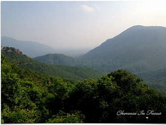

The Javadhu Hills (also Jawadhi, Jawadhu Hills) ( Rainfall clouds producing Hills For North Tamilnadu) ( Ooty of Vellore ) are an extension of the Eastern Ghats spread across parts of Vellore and Tiruvannamalai districts in the northern part of the state of Tamil Nadu in southeastern India. This range separates Vellore and Tiruvannamalai districts. Tirupattur district lies on the north-western side and Tiruvannamalai district lies on the south-eastern side of this range. The towns of Tirupattur, Vaniyambadi and Ambur of Tirupattur district are located on the north western side and the towns of Chengam and Polur of Tiruvannamalai district are located on the south eastern side. The hills consist of bluish-gray granites, with peaks averaging 3,800–4,000 feet (1,300–1,350 m). About 50 miles (80 km) wide and 20 miles (32 km) long, they are bisected into eastern and western sections by the Cheyyar and Agaram rivers, tributaries of the Palar.8 During the British colonisation of India, the Javadhu Hills appeared occasionally in government gazetteers and manuals, ethnographies, and travelers' accounts. Henry le Fanu, writing in 1883, admired the beauty of the Jawadhi hills.
Javadhu Hills
| Javadhu Hills | |
|---|---|
|  | |
| Highest Peak | |
| Elevation | 641m / 2103feet |
| Length | 20 miles (32 km) |
| Coordinates | 12°34'60" N and 78°49'60" E |
| Geography | |
| Location | India |
| Borders on | Tamil Nadu |